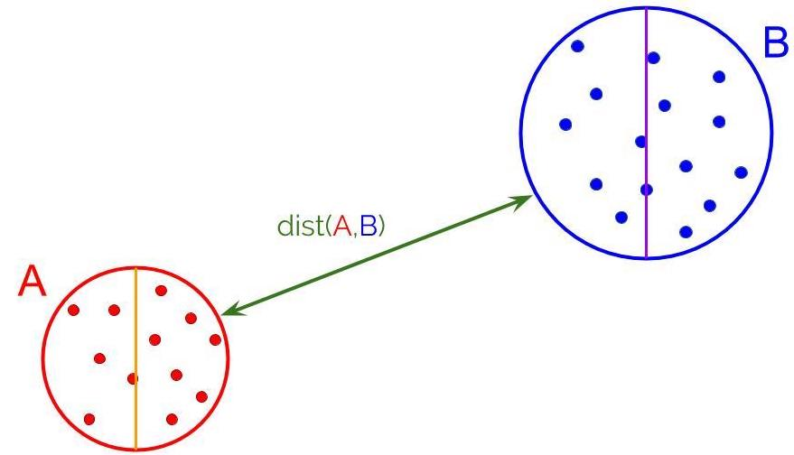

Quick Overview
Paul B. Callahan and S. Rao Kosaraju devised the well-separated pair decomposition (WSPD). They showed that it can be used to solve a variety of distance problems. A WSPD is a partition of the (n over 2) edges of the complete Euclidean graph into O(n) subsets. Each subset in this partition is represented by two subsets A and B of the point set S, such that:
- All distances between points in A and points in B are approximately equal
- All distances within the point set A are much smaller than distances between A and B
- All distances within the point set B are much smaller than distances between A and B.

The WSPD can be used to obtain many optimal algorithms for solving problems such as: closest pair problem, the k-closest pairs problem, the all-nearest neighbors problem, and the approximate minimum spanning tree problem. On this site, we will mainly focus on the details of the WSPD and its application with reguards to constructing spanners.